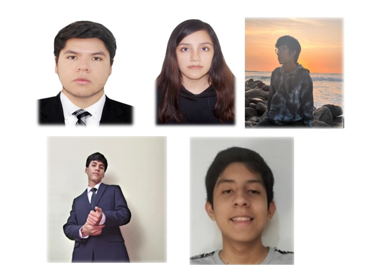

Detección temprana
Alertas a partir de ritmo cardiaco, SpO₂ y reportes del usuario.
 AliviaTech
AliviaTech
Nacimos con una idea sencilla: la ansiedad no debería pillarte sola. Por eso unimos una pulsera IoT, una app móvil y un panel médico para que todos vean lo mismo en tiempo real.
Durante las entrevistas identificamos que las personas con crisis de ansiedad suelen recibir ayuda tarde, cuando el episodio ya escaló. Faltaba un punto de alerta temprana y un canal rápido con el especialista.
AliviaTech propone un circuito completo: la pulsera detecta cambios, la app guía con ejercicios y el panel médico muestra la evolución. Así el profesional interviene mejor.
Todo lo que hacemos gira en torno a estos 4 pilares.
Alertas a partir de ritmo cardiaco, SpO₂ y reportes del usuario.
Respiraciones, grounding y recomendaciones según el nivel de ansiedad.
Seguimiento multipaciente para psicólogos y consultorios.
Mensajes breves, tono empático y sin tecnicismos innecesarios.
Coordinación de producto · Experiencia del paciente
Se encarga de que la app y el panel sean claros incluso en momentos de ansiedad y mantiene el tono empático de AliviaTech.
stephane@aliviatech.pe
Desarrollo web · Integración IoT
Conecta los datos de la pulsera con el portal para que el especialista vea lo mismo que el paciente, en tiempo real.
fabrizio@aliviatech.peTenemos un plan para psicólogos independientes y otro para clínicas con pacientes recurrentes.
Ir al portal médico